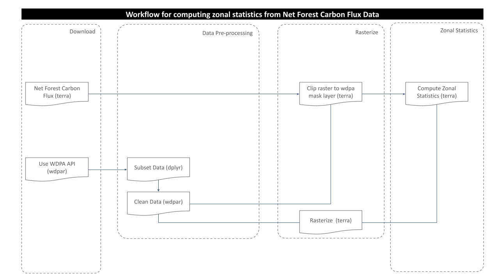
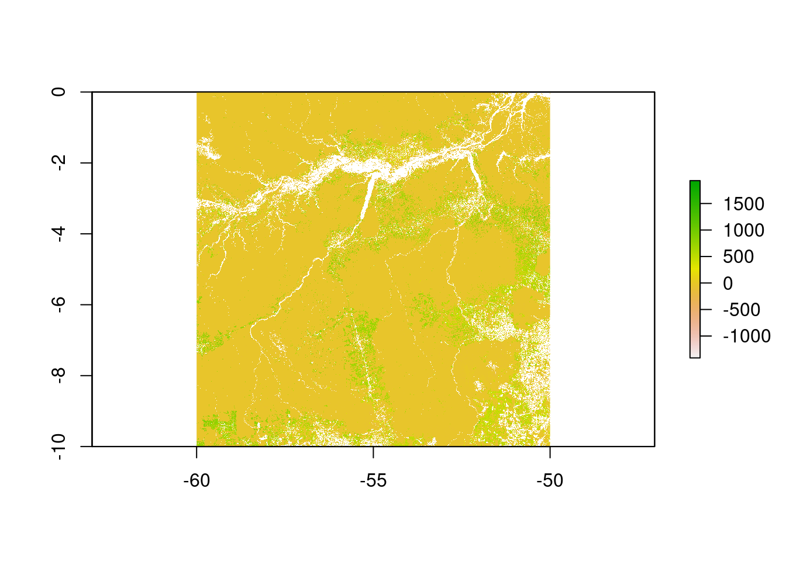
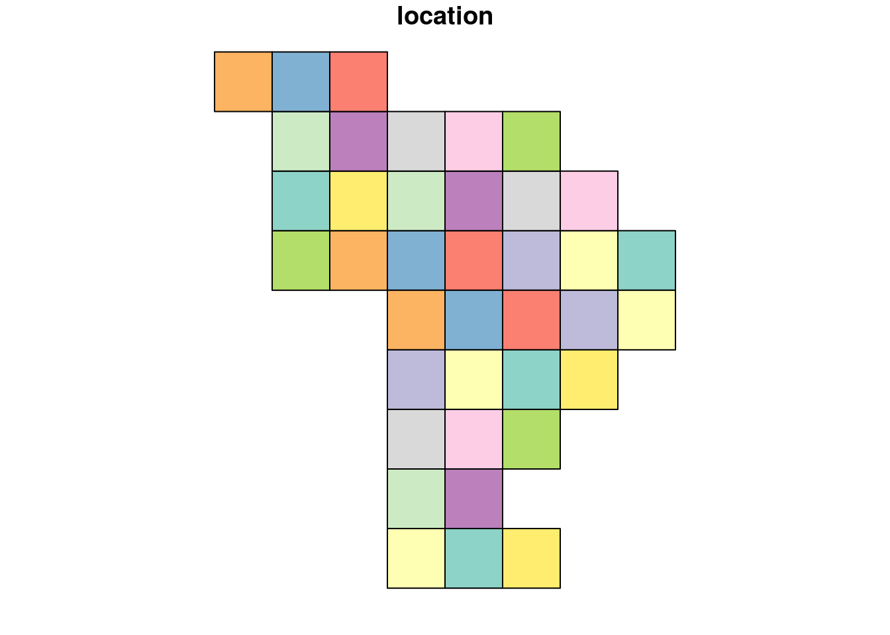
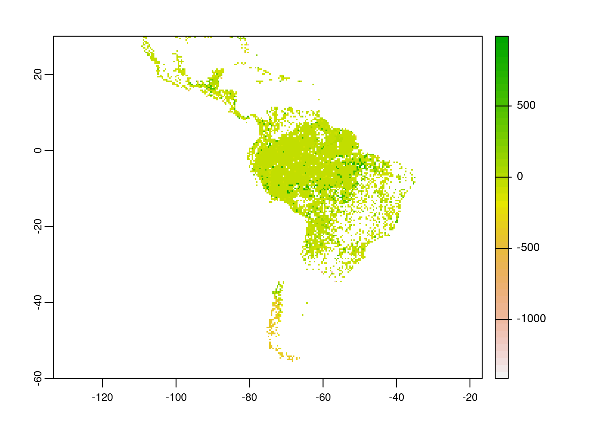
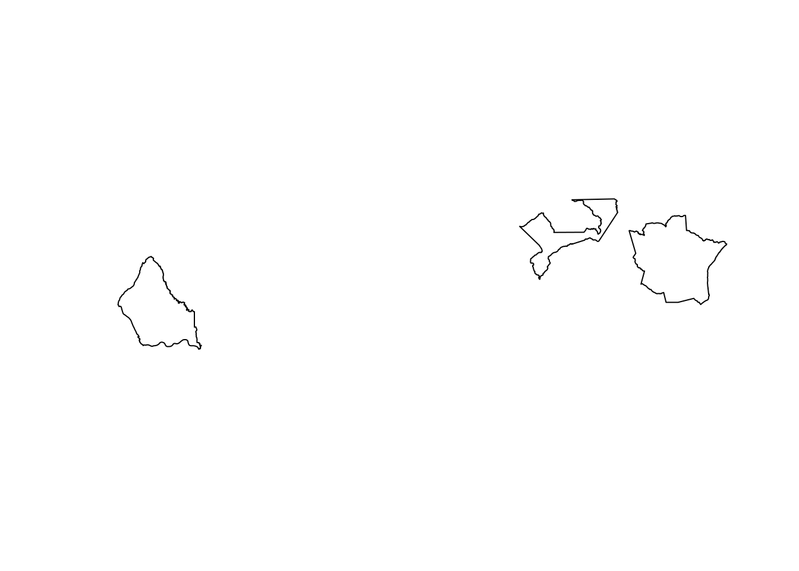
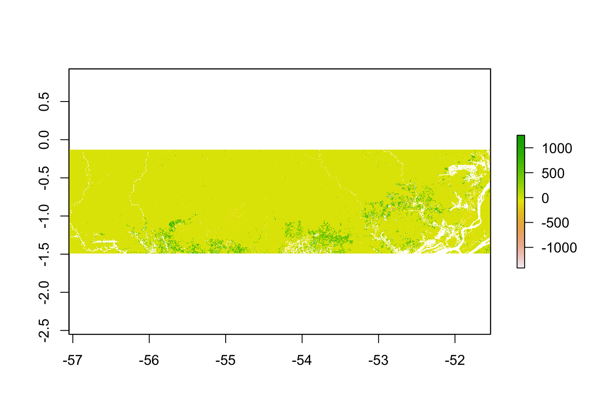

Net Forest Carbon Flux
Johannes Schielein, Om Prakash Bhandari
3/5/2021
Last updated: 2021-07-01
Checks: 7 0
Knit directory: mapme.protectedareas/
This reproducible R Markdown analysis was created with workflowr (version 1.6.2). The Checks tab describes the reproducibility checks that were applied when the results were created. The Past versions tab lists the development history.
Great! Since the R Markdown file has been committed to the Git repository, you know the exact version of the code that produced these results.
Great job! The global environment was empty. Objects defined in the global environment can affect the analysis in your R Markdown file in unknown ways. For reproduciblity it’s best to always run the code in an empty environment.
The command set.seed(20210305) was run prior to running the code in the R Markdown file. Setting a seed ensures that any results that rely on randomness, e.g. subsampling or permutations, are reproducible.
Great job! Recording the operating system, R version, and package versions is critical for reproducibility.
Nice! There were no cached chunks for this analysis, so you can be confident that you successfully produced the results during this run.
Great job! Using relative paths to the files within your workflowr project makes it easier to run your code on other machines.
Great! You are using Git for version control. Tracking code development and connecting the code version to the results is critical for reproducibility.
The results in this page were generated with repository version 364ae4b. See the Past versions tab to see a history of the changes made to the R Markdown and HTML files.
Note that you need to be careful to ensure that all relevant files for the analysis have been committed to Git prior to generating the results (you can use wflow_publish or wflow_git_commit). workflowr only checks the R Markdown file, but you know if there are other scripts or data files that it depends on. Below is the status of the Git repository when the results were generated:
Ignored files:
Ignored: .RData
Ignored: .Rhistory
Ignored: .Rproj.user/
Ignored: data-raw/addons/docs/rest/
Ignored: data-raw/addons/etc/
Ignored: data-raw/addons/scripts/
Note that any generated files, e.g. HTML, png, CSS, etc., are not included in this status report because it is ok for generated content to have uncommitted changes.
These are the previous versions of the repository in which changes were made to the R Markdown (analysis/carbon-flux.rmd) and HTML (public/carbon-flux.html) files. If you’ve configured a remote Git repository (see ?wflow_git_remote), click on the hyperlinks in the table below to view the files as they were in that past version.
| File | Version | Author | Date | Message |
|---|---|---|---|---|
| html | dd5c325 | Johannes Schielein | 2021-06-30 | Build site. |
| html | 8bd1321 | Johannes Schielein | 2021-06-30 | Host with GitLab. |
| html | 3a39ee3 | Johannes Schielein | 2021-06-30 | Host with GitHub. |
| html | ae67dca | Johannes Schielein | 2021-06-30 | Host with GitLab. |
| Rmd | e0bf7b4 | Om Bandhari | 2021-06-29 | update carbon flux rmd document |
| Rmd | 4b843c8 | ombhandari | 2021-04-21 | update file name |
| Rmd | 5b54ba0 | ombhandari | 2021-04-06 | update carbon flux rmd - big raster LA - workflow |
| Rmd | 53a00c2 | Ohm-Np | 2021-03-17 | enhance carbon flux rmd |
| Rmd | 7fe2b1b | Ohm-Np | 2021-03-15 | replace sp, raster by sf, terra |
| Rmd | 7f1106c | Johannes Schielein | 2021-03-12 | minor changes to carbon flux scheme |
| Rmd | 93afdd7 | GitHub | 2021-03-11 | minor updates carbon flux rmd |
| Rmd | 0640985 | Ohm-Np | 2021-03-11 | update carbon flux rmd with wdpar |
| Rmd | 611bd97 | Ohm-Np | 2021-03-05 | create net carbon flux rmd |
# load required libraries
library("terra")
library("sf")
library("wdpar")
library("dplyr")
library("rmarkdown") # only used for rendering tables for this website
starttime<-Sys.time() # mark the start time of this routine to calculate processing time at the endAt first you might want to load the source functions for this routine.
source("code/carbon-flux.R")Introduction
Forest Carbon Emissions are greenhouse gas emissions that originate from forest cover loss and subsequent Above Ground Biomass and Below Ground Biomass loss. Forest cover loss might be the result of either anthropogenic deforestation or disasters such as forest fires and same goes for biomass loss too. Forest acts as both a Source and Sink for Carbon. Sink, when the forest absorbs more carbon than it releases. Source, when forest releases more carbon than it absorbs. To determine whether forests in defined zone acts as source or sink of carbon, net forest carbon flux is calculated which represents the net exchange of carbon between forests and the atmosphere.
Datasource and Metadata Information
- Dataset: Net Forest Carbon Flux - Global Forest Watch (Harris et al. (2021))
- Geographical Coverage: Global
- Spatial resolution: 30 meter
- Temporal Coverage: 2001-2019
- Temporal resolution: Annual Updates
- Unit: megagrams CO2 emissions/ha
- Data downloaded: 5th March, 2021
- Metadata Link
- Download Link
Processing Workflow
The purpose of this analysis is to compute net forest carbon flux for the desired wdpa polygons. This is achieved through zonal statistics operation. A zonal statistics operation is one that calculates statistics on cell values of a raster (a value raster) within the zones defined by another dataset [ArcGIS definition].
To calculate zonal statistics for net forest carbon flux that changed between 2001 to 2019, following processing routine is followed in this analysis:

Download and prepare WDPA polygons
Since we already prepared raster data for our analysis. Now, we will try to get the country level polygon data from wdpar package. wdpar is a library to interface to the World Database on Protected Areas (WDPA). The library is used to monitor the performance of existing PAs and determine priority areas for the establishment of new PAs. We will use Brazil - for other countries of your choice, simply provide the country name or the ISO name e.g. Gy for Guyana, COL for Colombia
# fetch the raw data from wdpar of country
br_wdpa_raw <- wdpa_fetch("Brazil")Since there are more than 3000 enlisted protected areas in Brazil, we want to compute zonal statistics only for the polygon data of: - Reserva Biologica Do Rio Trombetas - wdpaid 43, - Reserva Extrativista Rio Cajari - wdpaid 31776, and - Estacao Ecologica Do Jari - wdpaid 4891
For this, we have to subset the country level polygon data to the pa level.
# subset three wdpa polygons by their wdpa ids
br_wdpa_subset <-
br_wdpa_raw%>%
filter(WDPAID %in% c(43,4891,31776))The next immediate step would be to clean the fetched raw data with the functionality provided with routines from the wdpar package. Cleaning is done by the package following this steps:
- exclude protected areas that are not yet implemented
- exclude protected areas with limited conservation value
- replace missing data codes (e.g. “0”) with missing data values (i.e. NA)
- replace protected areas represented as points with circular protected areas that correspond to their reported extent
- repair any topological issues with the geometries
# clean the data
br_wdpa_subset <- wdpa_clean(
br_wdpa_subset,
erase_overlaps = F
)
# SpatialPolygonsDataFrame for sf compatibility
br_wdpa_subset_sf <-
st_as_sf(br_wdpa_subset)
# transform to WGS84
br_wdpa_subset_sf <- st_transform(br_wdpa_subset_sf,
"+proj=longlat +datum=WGS84 +no_defs")
# we can plot the polygon data to see the three selected polygons
plot(br_wdpa_subset_sf[1])
Download and prepare raster data
Using API
The script carbon-flux.R contains the function to download the raster file of the desired grid.
How to use the function?
- call the function
get_net_carbon_fluxby passing (lat, lon) arguments as string for eg. (“10S_050W”) or (“10N_020E”) - check the coordinates of your desired area and find out the grid under which interval of latitude and longitude does it fall
- or simply visit the GFW Dataset Portal to verify chosen grid coordinates
- Note: If in case you choose to compute zonal statistics for larger polygon level or for many polygon levels, then one raster data might not be enough for your computation. Then you must download multiple raster files so as to cover the polygon extent and merge them later simply using
mergefunction.
options(timeout=180) # sets timeout for downloads to 180seconds
# call the function to download raster for a part of the country Brazil where we want to compute zonal statistics
# Note: raster value is 'Mg_CO2_ha-1'
myRaster <-
get_net_carbon_flux("00N_060W")After successfully running this function, you can see that the raster file is downloaded and stored in the temporary directory of R and is loaded to the working directory as the layer name myRaster as class object ‘SpatRaster’.
# view raster metadata
myRasterclass : SpatRaster
dimensions : 40000, 40000, 1 (nrow, ncol, nlyr)
resolution : 0.00025, 0.00025 (x, y)
extent : -60, -50, -10, 0 (xmin, xmax, ymin, ymax)
coord. ref. : +proj=longlat +datum=WGS84 +no_defs
source : Rtmp6FnEky00N_060W.tif
name : Rtmp6FnEky00N_060W # plot the raster
plot(myRaster)
Using Archived File
The entire processing routine can be implemented using archived raster file which are stored in datalake. The only difference will be, we load the raster from datalake rather than downloading the raster by calling the function get_net_carbon_flux. Doing so will eliminate the possible connection issues to the data server and will speed up the processing routine.
Simply, to save further processing time and to avoid complexities, we would use the index shapefiles to load the particular raster which intersects with the PA polygon. For this, we load the index shapefiles generated for the carbon flux rasters.
# load index shapefile
index <-
read_sf("../../datalake/mapme.protectedareas/processing/net_carbon_flux/raster_index/raster_index.shp")
# transform to wgs84
index <- st_transform(index,
"+proj=longlat +datum=WGS84 +no_defs")Lets have a look at how does the index polygon looks like:
plot(index)
From the plot, we can see that the index polygon covers the entire Latin America on 10*10 grids. In order to load the required rasters, we need to intersect the index polygon and the WDPA polygon.
# crop the index with wdpa polygon
br_crop <- st_crop(index,
br_wdpa_subset_sf)although coordinates are longitude/latitude, st_intersection assumes that they are planar# check the number of rasters having intersection with the polygon
n <- nrow(br_crop)
n[1] 1Hence, the polygon we selected intersects only with the one carbon flux raster.
Now the raster file is loaded to the working directory as the layer name myRaster_ar as class object ‘SpatRaster’.
# view raster metadata
myRaster_ar <-
rast(br_crop$location)
# plot the raster
plot(myRaster_ar)
Note: For this routine, we are using myRaster_ar, the archived one.
Crop the Carbon Flux Raster
As we completed raster and vector data preparation, the next step would be to clip the raster layer by the selected shapefile polygon both by its extent and mask layer. If we clip by extent, it does clipping the raster by its bounding box. However, mask layer clipping returns the raster to defined vector polygon layer.
# extent preparation; SpatVector for `terra` compatibility
myExtent <-
vect(br_wdpa_subset_sf)
# crop raster using polygon extent
myCrop <- terra::crop(myRaster_ar,
myExtent)
# plot the data - shows the raster after getting cropped by the extent of polygon
plot(myCrop)
# crop raster using polygon mask
myMask <- terra::mask(myCrop,
myExtent)
# plot the data - shows the raster after getting cropped by the polygon mask
plot(myMask)
Rasterize the polygon layer
To compute the zonal statistics, it is necessary to rasterize the polygon layer. Doing so, values are transferred from the spatial objects to raster cells. We need to pass the extent layer and the mask layer to the rasterize function.
# rasterize
r <- terra::rasterize(myExtent, myMask, myExtent$WDPAID, background=NA, update=FALSE, touches=is.lines(myExtent), cover=FALSE)Compute zonal statistics
A zonal statistics operation is one that calculates statistics on cell values of a raster (a value raster) within the zones defined by another dataset [ArcGIS definition].
# zonal stats
zstats <- zonal(myMask, r, fun='sum', na.rm=T)
# create dataframe
df.zstats <- data.frame(WDPAID=NA,
Net_Forest_Carbon_Flux=NA)
# rename column to match with dataframe
colnames(zstats) <- colnames(df.zstats)
# view the data
rbind(df.zstats,zstats)[-1,] WDPAID Net_Forest_Carbon_Flux
2 43 -203318550
3 4891 -130529661
4 31776 -151360034By mathematical definition, net forest carbon flux is the difference between average annual gross emissions and average annual gross removals. Hence, positive result denotes forests as net sources of carbon and negative results denotes forests as net sinks of carbon.
For all the three polygons we considered, we got the negative result. That means forests in these three Protected Areas act as the net sinks of carbon.
Note: If the polygon of interest intersects with multiple rasters, we have two methods to get the zonal statistics:
1. load all rasters - merge them into one single raster using terra:merge - follow the processing routine - compute zonal statistics
2. load individual raster - follow the processing routine - get zonal stats for individual rasters - aggregate the results
In the end we are going to have a look how long the rendering of this file took so that we can get an idea about the processing speed of this routine.
stoptime<-Sys.time()
print(starttime-stoptime)Time difference of -1.285786 minsReferences
[1] Harris, N.L., D.A. Gibbs, A. Baccini, R.A. Birdsey, S. de Bruin, M. Farina, L. Fatoyinbo, M.C. Hansen, M. Herold, R.A. Houghton, P.V. Potapov, D. Requena Suarez, R.M. Roman-Cuesta, S.S. Saatchi, C.M. Slay, S.A. Turubanova, A. Tyukavina. 2021. Global maps of twenty-first century forest carbon fluxes. Nature Climate Change. https://doi.org/10.1038/s41558-020-00976-6
sessionInfo()R version 3.6.3 (2020-02-29)
Platform: x86_64-pc-linux-gnu (64-bit)
Running under: Ubuntu 18.04.5 LTS
Matrix products: default
BLAS: /usr/lib/x86_64-linux-gnu/blas/libblas.so.3.7.1
LAPACK: /usr/lib/x86_64-linux-gnu/lapack/liblapack.so.3.7.1
locale:
[1] LC_CTYPE=C.UTF-8 LC_NUMERIC=C LC_TIME=C.UTF-8
[4] LC_COLLATE=C.UTF-8 LC_MONETARY=C.UTF-8 LC_MESSAGES=C.UTF-8
[7] LC_PAPER=C.UTF-8 LC_NAME=C LC_ADDRESS=C
[10] LC_TELEPHONE=C LC_MEASUREMENT=C.UTF-8 LC_IDENTIFICATION=C
attached base packages:
[1] stats graphics grDevices utils datasets methods base
other attached packages:
[1] rmarkdown_2.6 dplyr_1.0.6 wdpar_1.0.6 sf_0.9-8 terra_1.2-15
loaded via a namespace (and not attached):
[1] tidyselect_1.1.1 xfun_0.20 purrr_0.3.4 lattice_0.20-44
[5] vctrs_0.3.8 generics_0.1.0 htmltools_0.5.1.1 yaml_2.2.1
[9] utf8_1.2.1 rlang_0.4.11 e1071_1.7-7 later_1.2.0
[13] pillar_1.6.0 glue_1.4.2 DBI_1.1.1 rappdirs_0.3.3
[17] sp_1.4-5 lifecycle_1.0.0 stringr_1.4.0 workflowr_1.6.2
[21] raster_3.4-10 codetools_0.2-18 evaluate_0.14 knitr_1.30
[25] httpuv_1.6.1 curl_4.3.1 class_7.3-19 fansi_0.5.0
[29] Rcpp_1.0.6 KernSmooth_2.23-20 promises_1.2.0.1 classInt_0.4-3
[33] lwgeom_0.2-6 countrycode_1.2.0 fs_1.5.0 digest_0.6.27
[37] stringi_1.6.2 grid_3.6.3 rprojroot_2.0.2 tools_3.6.3
[41] magrittr_2.0.1 proxy_0.4-26 tibble_3.1.1 crayon_1.4.1
[45] whisker_0.4 pkgconfig_2.0.3 ellipsis_0.3.2 assertthat_0.2.1
[49] httr_1.4.2 R6_2.5.0 units_0.7-1 git2r_0.28.0
[53] compiler_3.6.3